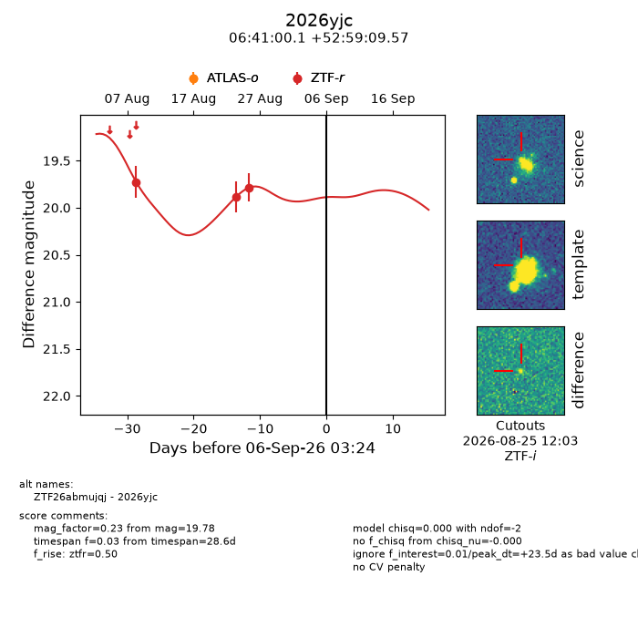
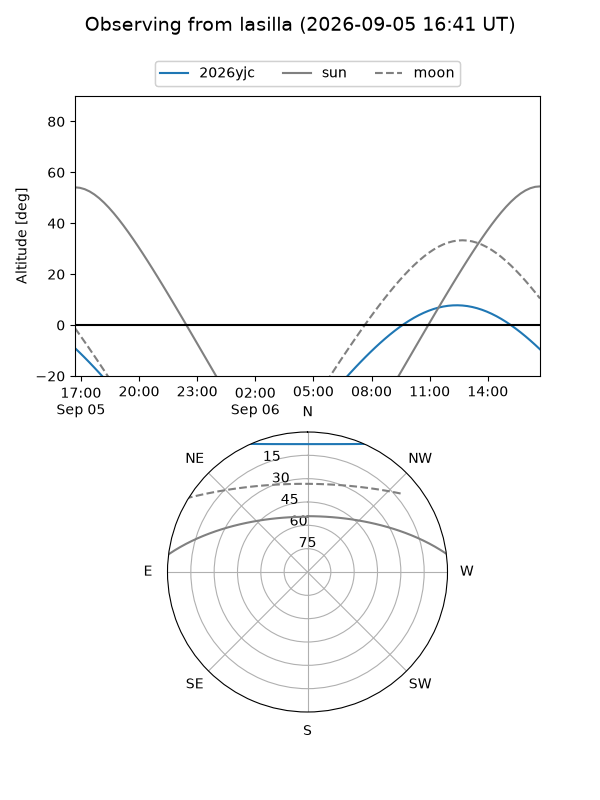
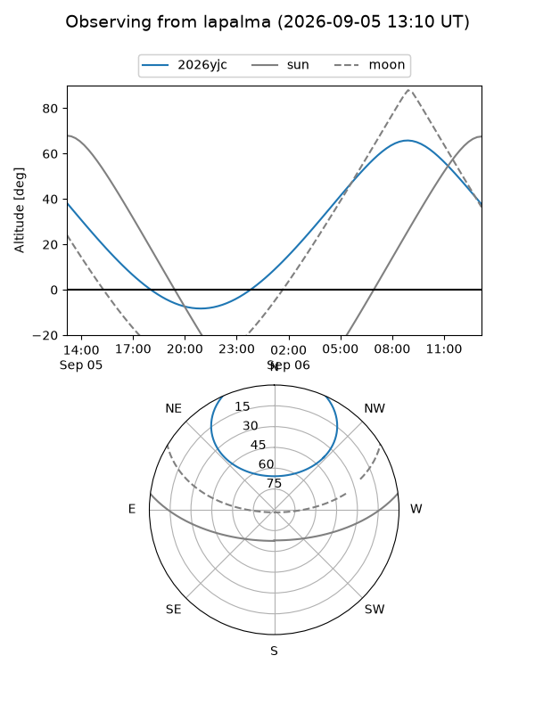
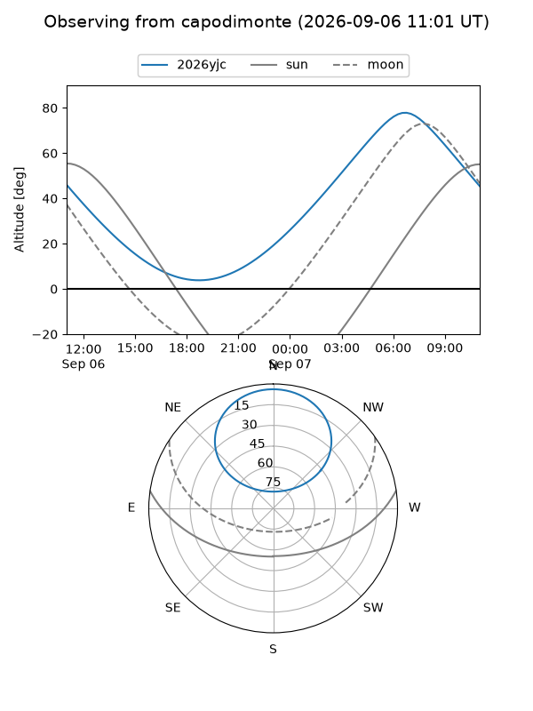
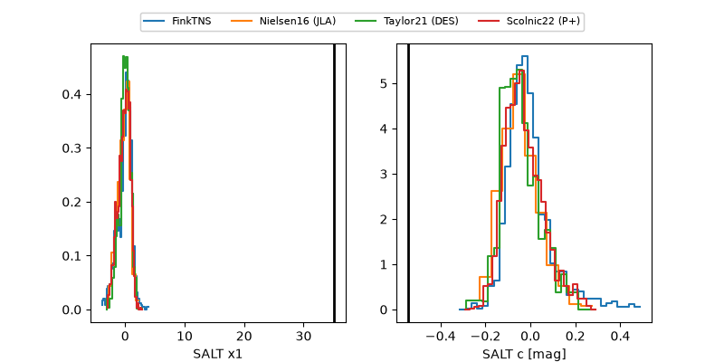

2026yjc
Target 2026yjc at 2026-09-06 14:36
Aliases and brokers:
FINK-ZTF: ztf.fink-portal.org/ZTF26abmujqj
Lasair-ZTF: lasair-ztf.lsst.ac.uk/objects/ZTF26abmujqj
ALeRCE-ZTF: alerce.online/object/ZTF26abmujqj
YSE-PZ: ziggy.ucolick.org/yse/transient_detail/2026yjc
TNS name: wis-tns.org/object/2026yjc
Direct TNS query: direct search
alt names
ZTF26abmujqj (ztf,fink_ztf)
2026yjc (tns,yse)
Coordinates:
equatorial (ra, dec) = 100.2503,+52.98599
equatorial (HMS+DMS) = 06:41:00.08,+52:59:09.57
galactic (l, b) = (162.6799,+19.85905)
Flags:
TNS type: nan
peak dt: +23.9
Photometry:
last ztfr=19.78
3 ztfr detections
Lightcurve

Visibility



Additional plots
